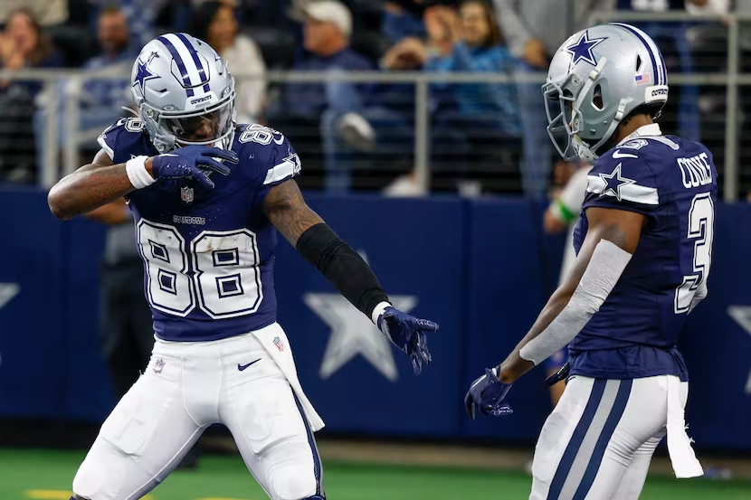

Matchup of the Week
*️⃣ Tua Williams One Kupp (6-2) v. Hurts Donut (3-5) *️⃣ This one could put some space between the top of the league on the middle. Joel would have a tough road to the playoffs without this one, while Seif can put himself a full game ahead of PJ who is apparently throwing this week.
Honorable Mention
What to Watch: Seif’s RBs got off to a nice start on Thursday, but I’m looking at a trio for Joel: Jacobs, Mixon and Olave. The usage and targets are there, but they’ve failed to turn those into big weeks. Jacobs has a plus matchup, but can the Raiders do anything right?
Waiver Wire Wizard
🧙🏻♂️ PJ - Taysom Hill - $11 PJ goes all in with Hill, flipping Andrews shortly thereafter. He’s been a top six TE each of the last three weeks. Could this finally be the consistency that’s held Taysom out of lineups over the years?
Honorable Mention Pangy - Jake Furguson - $1 In the tight-end wasteland, Furguson has great value, especially when that value is at $1.
Cries for Help
😭 PJ - $11 - Sam Howell No one else bids on him, but PJ has to spend to be safe. He continues to not have an answer at QB (but this is probably the anti-hex)
Honorable Mention Andy - $0 - Royce Freeman Even at zero bucks, this seems desperate.
Week Nine Power Rankings
👑 Tua Williams One Kupp (6-2, W4, PF 1096.42) ⬆️
Waiver Budget: $13 God dammit. We can’t let Seif win again. Even with Kupp’s second straight dud, he gets the W over PJ and slides into #1 in the rankings and standings.
2. JA MONTG (4-4, W2, PF 1108.80) ⬆️
Waiver Budget: $32 Second straight week with the top points, and 1st in PF on the season. Tony’s team is a force similar to CMC’s touchdown streak. Can he hold on this week with the Niners on a bye? Sunday morning update - Kelce not looking so great, probably not.
3. Diggin That Bijan Mustard (5-3, W1, PF 1037.76) ⬆️
Waiver Budget: $44 I’m pretty sure this is the most consistent team in the league - I had a tough time ranking CJ this low. He gets a layup against PJ, who again is sitting this week out… while they’re strangely together IRL in Colorado. COLLUSION!
4. 8======D (6-2, L1, PF 952.74) ⬇️⬇️⬇️
Waiver Budget: $18 Big drop from #1, but this roster suddenly looks beatable. PJ is sixth in PF and could have the lowest score of the week this week. Win total is keeping him afloat for now. Big trade moving Andrews and pieces for St. Brown, who I think may be the most universally loved wideout in the league.
5. Exotic Engrams (4-4, 1W, PF 1001.72) 🔂
Waiver Budget: $34 Third straight week as the second-highest scorer. Feeling pretty good about my team, if I can get Pollard and/or Jones to do anything. Tough week next week for me without Mahomes or Hill. I really need the W this week to stay in the playoff mix.
6. Justin and the Blazettes (4-4, 1W, PF 931.56) ⬆️
Waiver Budget: $5 Andy has FAAB again, and a new name. That’s a dangerous combination! Can he pull of the upset against JA MONTG? I’ve got my eyes on DeVonta Smith in a tough one against a Dallas D who has only allowed 15+ pts to one WR all year.
7. Hurts Donut (3-5, 1L, PF 953.90) ⬇️
Waiver Budget: $29 Oh man, you should trade for Jordan Love to be Love Hurts Donut. As I mentioned earlier, I’ve got my eyes on this matchup. The stack of Hurts and Godert can always propel Joel to a win, but again, have that tough matchup against Dallas.
8. Sweet Brotha Numpsay (3-5, 4L, 912.02) ⬆️
Waiver Budget: $29 Four straight losses and he moves up a spot? This author must be high. I’ve not been high on this team this year though, but Pangy will have a chance to shut me up today. God, AJ Brown scares the shit out of me. I’m sure you’ve all heard but he’s got 125+ yards in each of the last six weeks, with five touchdowns mixed in there.
9. Love Heem (3-5, 3L, PF 851.14) ⬇️
Waiver Budget: $35 Kris trades spots with Pangy, as he doesn’t have AJ Brown (mostly, lol). Mostert cooling off at the time he needs him most. He’s been extremely pedestrian the last two weeks, including this Sunday morning game, with almost no yards, but luckily scoring in each game. (As I typed this he just busted a 26-yard run, then a 16-yarder on the next play! Anti-hex!)
💩 Unpaid Bills (2-6, 1L, 894.48) 🔂
Waiver Budget: $12 Reeeedeeee Lamb is killing it, and Lamar might be the IRL MVP, but the it simply hasn’t been there for Neil all year. Could Tee Higgins see a bounce back with the Bengals now looking like their old self? If Barkley can stay healthy down the stretch, he could help boost Neo, now that he’s solidified the TE spot with Kincaid.
Good luck to everyone besides Pangy! 👶
“Lil boy don’t text me.”
- Kenneth Gainwell, tweeting at fans during halftime after fumbling